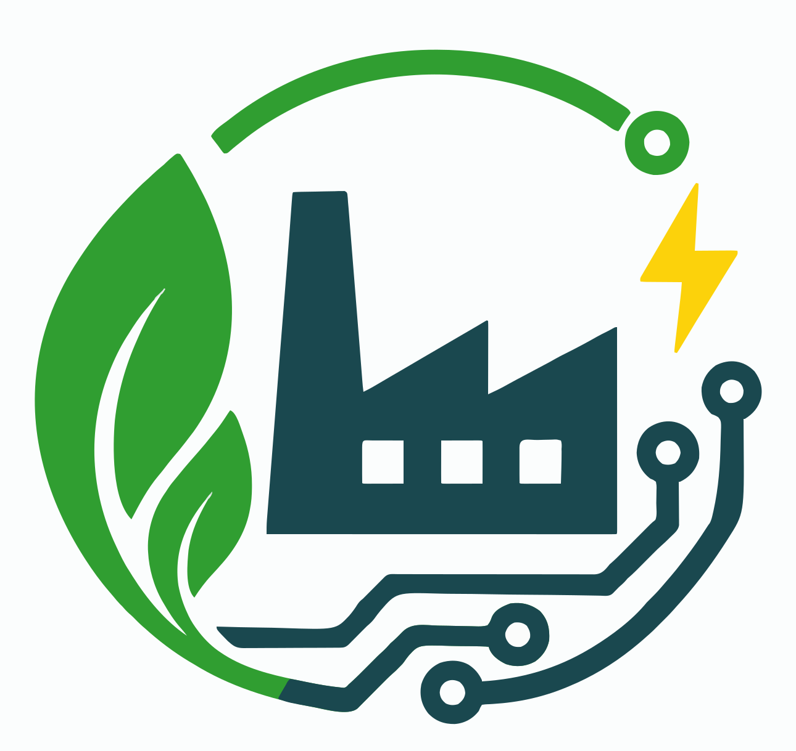

<!doctype html><html lang="pt-BR"><head><meta charset="utf-8"><meta name="viewport" content="width=device-width,initial-scale=1"><title>ECOFLOW — Simulação</title><style>
*{box-sizing:border-box}body{margin:0;background:#f4f7f8;color:#18262d;font:14px Arial,sans-serif}.top{height:92px;background:white;border-bottom:1px solid #dfe7e9;display:flex;align-items:center;padding:12px 28px;gap:18px}.logo{width:62px;height:62px;object-fit:contain}.eco{font-size:24px;font-weight:bold;color:#319d42}.sep{width:2px;height:35px;background:#ccd7da}.top h1{font-size:23px;margin:0}.topright{margin-left:auto;color:#43535a}.layout{display:grid;grid-template-columns:230px 1fr;min-height:calc(100vh - 92px)}aside{background:#143d46;color:white;padding:20px 14px}nav a{display:block;color:white;text-decoration:none;padding:14px;border-radius:6px;margin:4px 0}nav a:hover,nav a.active{background:#ffffff18;border-left:3px solid #4bd45e}.side{margin-top:70px;border:1px solid #ffffff35;padding:14px;border-radius:7px}.side b{display:block;color:#70e27c;margin:9px 0}.main{padding:20px;overflow:auto}.tag{display:inline-block;background:#fff2c2;border:1px solid #efd36a;color:#715b00;padding:7px 11px;border-radius:6px;font-size:11px;font-weight:bold;float:right}.cards{display:grid;grid-template-columns:repeat(6,1fr);gap:13px;clear:both;padding-top:12px}.card{background:white;border:1px solid #e1e8ea;border-radius:12px;padding:16px;box-shadow:0 3px 14px #18343b12}.metric{min-height:120px}.label{font-size:10px;text-transform:uppercase;color:#617178}.num{font-size:25px;font-weight:bold;margin-top:6px}.sub{font-size:11px;color:#69797f;margin-top:4px}.green{color:#38a548}.red{color:#df4942}.yellow{color:#bd8f00}.muted{color:#8d9ca2}.grid{display:grid;grid-template-columns:1.6fr 1.1fr .8fr;gap:13px;margin-top:13px}.panel{min-height:280px}.title{font-size:13px;font-weight:bold;text-transform:uppercase;margin-bottom:15px}.bars{height:210px;display:flex;align-items:end;gap:18px;padding:20px;border-bottom:1px solid #dbe3e6}.bar{flex:1;background:#43a84e;border-radius:4px 4px 0 0;position:relative}.bar.warn{background:#f0bd22}.bar.bad{background:#df554d}.bar span{position:absolute;top:-18px;width:100%;text-align:center;font-size:10px}.chart{height:210px}.chart svg{width:100%;height:100%}.row{display:flex;justify-content:space-between;padding:12px 0;border-bottom:1px solid #e7edef;font-size:11px}.flow{display:grid;grid-template-columns:repeat(5,1fr);border:1px solid #e0e7e9;border-radius:9px;padding:14px}.step{text-align:center;border-right:1px solid #dde5e7;padding:8px}.step:last-child{border:0}.step strong{display:block;font-size:9px;margin:8px 0}.step small{font-size:8px;color:#708087}.foot{margin:13px -20px -20px;background:#173e47;color:white;padding:14px 20px;font-size:10px;display:flex;justify-content:space-between}.controls{display:grid;grid-template-columns:repeat(5,1fr);gap:10px;margin:14px 0}.controls button{border:0;border-radius:8px;padding:17px 8px;font-weight:bold;background:#e8f7eb;color:#287d35;cursor:pointer}.controls button:focus-visible{outline:3px solid #143d46;outline-offset:2px}.controls .dark{background:#173e47;color:white}.controls .warn{background:#fff1bf;color:#715900}.controls .danger{background:#ffe0de;color:#a33b35}.controls .gray{background:#e9eef0;color:#4b5b61}.hero{display:flex;justify-content:space-between;align-items:center;background:white;border:1px solid #e1e8ea;border-radius:12px;padding:20px}.hero h2{margin:0 0 5px}.hero p{margin:0;color:#66777d}.logs{margin-top:14px}.logs table{width:100%;border-collapse:collapse;font-size:11px}.logs th,.logs td{text-align:left;padding:10px;border-bottom:1px solid #e5ebed}.machine{background:#123e45;color:white;border-radius:9px;padding:18px;margin-top:10px}.machine .big{font-size:21px;font-weight:bold;margin-top:5px}.machine .state{color:#ff766f;font-weight:bold;margin-top:10px}.note{font-size:10px;color:#69797f;line-height:1.5}.act{border-left:4px solid #43a84e;background:#f2faf4;border-radius:0 8px 8px 0;padding:14px;line-height:1.7}.act.alert{border-left-color:#df554d;background:#fdf3f2}.act b{display:block;margin-bottom:6px}.act ul{margin:8px 0 0;padding-left:18px;font-size:11px;color:#4d5f66}.act li{margin:4px 0}
.old-shell{font:11px Tahoma,Verdana,sans-serif;background:#c0c0c0;color:#000;min-height:100vh}.old-title{background:linear-gradient(180deg,#2a63d6,#0a246a 65%,#0a246a);color:#fff;padding:5px 9px;display:flex;justify-content:space-between;align-items:center;font-weight:bold;font-size:12px}.old-winbtns i{display:inline-block;width:16px;height:14px;background:#c0c0c0;color:#000;text-align:center;line-height:14px;font-style:normal;border:1px solid;border-color:#fff #404040 #404040 #fff;margin-left:3px;font-size:9px}.old-menu{background:#c0c0c0;border-bottom:1px solid #808080;padding:3px 9px}.old-toolbar{background:#c0c0c0;border-bottom:1px solid #808080;padding:4px 9px;display:flex;gap:6px;align-items:center;flex-wrap:wrap}.old-btn{font:11px Tahoma,Verdana,sans-serif;background:#c0c0c0;border:1px solid;border-color:#fff #404040 #404040 #fff;padding:3px 9px;cursor:pointer}.old-btn:active{border-color:#404040 #fff #fff #404040}.old-toolbar-nav{margin-left:auto;font-size:11px}.old-toolbar-nav a{color:#0000ee;text-decoration:underline;margin:0 3px}.old-toolbar-nav a:visited{color:#551a8b}.old-marquee{background:#ffff00;color:#990000;font-weight:bold;border-top:1px solid #808080;border-bottom:1px solid #808080;padding:3px 0;font-size:11px}.old-body{padding:10px;display:grid;grid-template-columns:1fr 1fr;gap:10px}.old-table{width:100%;border-collapse:collapse;background:#fff;border:2px solid;border-color:#808080 #fff #fff #808080}.old-table th,.old-table td{border:1px solid #c0c0c0;padding:4px 7px;text-align:left}.old-th{background:#000080;color:#fff;font-size:11px}.old-num{text-align:right;font-weight:bold}.old-center{text-align:center}.old-green{color:#006600;font-weight:bold}.old-yellow{color:#806600;font-weight:bold}.old-muted{color:#808080;font-style:italic}.old-blink{animation:oldblink 1s step-start infinite;color:#cc0000}@keyframes oldblink{50%{opacity:0}}.old-note{grid-column:1/-1;background:#ffffe1;border:1px solid #808080;padding:9px;font-size:11px;line-height:1.6}.old-status{background:#c0c0c0;border-top:1px solid #fff;display:flex;justify-content:space-between;padding:3px 10px;font-size:10px}.old-hits{grid-column:1/-1;text-align:center;color:#808080;font-size:10px;padding:6px 0 0}
@media(max-width:1100px){.cards{grid-template-columns:repeat(3,1fr)}.grid{grid-template-columns:1fr 1fr}.grid .summary{grid-column:span 2}.controls{grid-template-columns:repeat(3,1fr)}}@media(max-width:700px){.top{height:70px;padding:8px 12px}.logo{width:46px;height:46px}.eco{font-size:17px}.top h1{font-size:16px}.topright{font-size:9px}.layout{display:block}aside{display:none}.main{padding:12px}.cards{grid-template-columns:1fr 1fr}.grid{grid-template-columns:1fr}.grid .summary{grid-column:auto}.flow{grid-template-columns:1fr 1fr}.controls{grid-template-columns:1fr 1fr}.hero{display:block}.old-body{grid-template-columns:1fr}}
</style></head><body><div id="app"></div><script>
const KEY='ecoflow-demo';const def={mode:'normal',prod:true,logs:[['10:24:12','Produção iniciada','Sucesso'],['10:24:18','Esteira operando dentro dos parâmetros','Normal']]};function S(){try{return JSON.parse(localStorage.getItem(KEY))||def}catch(e){return def}}function save(s){localStorage.setItem(KEY,JSON.stringify(s));render()}function tm(){return new Date().toLocaleTimeString('pt-BR')}function add(s,e,st){s.logs=(s.logs||[]);s.logs.push([tm(),e,st]);s.logs=s.logs.slice(-8)}

/* Base do protótipo: esteira acionada por motor DC 5 V com redução.
   Tensão e corrente vêm do sensor; a potência é sempre o produto das duas. */
const BASE={v:5.02,a:0.42,t:34.5,n:312,w:2.93,e:89.7};
const MODES={
 overload:   {a:.26,v:-.16,t:4, n:-24,w:1.37,e:-13.7},
 mechanical: {a:.39,v:-.31,t:7, n:-71,w:2.99,e:-19.3},
 temperature:{a:.10,v:-.07,t:18,n:-16,w:0.49,e:-6.2}
};
function V(){let s=S(),r=Math.min(1,Math.max(0,(Date.now()-(s.t||Date.now()))/7000)),m=MODES[s.mode],
 d={v:BASE.v,a:BASE.a,t:BASE.t,n:s.prod?BASE.n:0,w:BASE.w,e:BASE.e};
 if(m){d.a+=m.a*r;d.v+=m.v*r;d.t+=m.t*r;d.n=Math.round(d.n+(s.prod?m.n*r:0));d.w+=m.w*r;d.e+=m.e*r}
 d.p=d.v*d.a; /* potência derivada, nunca inventada */
 return d}

const ACTIONS={
 normal:{t:'Nenhuma ação necessária',c:'A esteira opera dentro da faixa esperada. O sistema segue comparando consumo e produção a cada leitura.',l:[]},
 overload:{t:'Verificar carga sobre a esteira',c:'A corrente subiu sem ganho de produção: a energia por peça aumentou. O padrão é típico de excesso de carga ou correia tensionada demais.',l:['Reduzir o acúmulo de peças na entrada','Conferir a tensão da correia','Registrar a ocorrência para o turno seguinte']},
 mechanical:{t:'Inspecionar o acionamento',c:'Maior corrente, queda de tensão e produção menor ao mesmo tempo. O motor está fazendo mais esforço para entregar menos — sinal de atrito no eixo ou no rolete.',l:['Parar a esteira e girar o rolete manualmente','Verificar lubrificação e alinhamento do eixo','Comparar a energia por peça antes e depois do ajuste']},
 temperature:{t:'Deixar o motor esfriar',c:'A temperatura sobe enquanto corrente e produção quase não mudam. O aquecimento vem da dissipação, não da carga.',l:['Verificar ventilação em volta do motor e do driver','Reduzir o ciclo de trabalho até estabilizar','Conferir se o dissipador está fixo']}
};

function shell(body,legacy=false){return `<div class="${legacy?'legacy ':''}app"><header class="top"><span class="eco">ECOFLOW</span><span class="sep"></span><h1>${legacy?'Portal Industrial':'ECOFLOW Dashboard'}</h1><div class="topright">🔔 &nbsp; ${new Date().toLocaleDateString('pt-BR')} &nbsp; <b>EN</b> Engenheiro</div></header><div class="layout"><aside><nav><a class="${legacy?'active':''}" href="#legacy">⌂ &nbsp; Visão Geral</a><a class="${!legacy?'active':''}" href="#eco">⌁ &nbsp; Monitoramento ECOFLOW</a><a href="#eco">♙ &nbsp; Esteiras</a><a href="#eco">▥ &nbsp; Energia</a><a href="#eco">△ &nbsp; Alertas</a><a href="#control">⚙ &nbsp; Central de Simulação</a></nav><div class="side"><small>STATUS DO SISTEMA</small><b>● ${S().mode==='normal'?'Operação Normal':'Ocorrência em andamento'}</b><small>${S().mode==='normal'?'Todos os sistemas dentro dos parâmetros.':'Alteração detectada pela plataforma.'}</small></div></aside><main class="main">${body}</main></div></div>`}

function metrics(d){return `<section class="cards"><div class="card metric"><div class="label">Corrente</div><div class="num">${d.a.toFixed(2)} A</div><div class="sub">${d.v.toFixed(2)} V no barramento</div><div class="${d.a>.60?'red':'green'}">● ${d.a>.60?'Acima do esperado':'Dentro da faixa'}</div></div><div class="card metric"><div class="label">Potência</div><div class="num">${d.p.toFixed(2)} W</div><div class="sub">tensão × corrente</div><div class="${d.p>3?'red':'green'}">● ${d.p>3?'Alerta ativo':'Leitura estável'}</div></div><div class="card metric"><div class="label">Temperatura</div><div class="num">${d.t.toFixed(1)} °C</div><div class="sub">carcaça do motor</div><div class="${d.t>48?'red':'green'}">● ${d.t>48?'Acima da faixa':'Dentro da faixa'}</div></div><div class="card metric"><div class="label">Produção acumulada</div><div class="num">${d.n.toLocaleString('pt-BR')} pçs</div><div class="sub">no turno</div><div class="green">● Hoje</div></div><div class="card metric"><div class="label">Energia por peça</div><div class="num">${d.w.toFixed(2)} mWh</div><div class="sub">consumo ÷ produção</div><div class="${d.w>4?'red':'green'}">${d.w>4?'↑ Subiu com a ocorrência':'↓ 8,3% vs. ontem'}</div></div><div class="card metric"><div class="label">Eficiência</div><div class="num">${d.e.toFixed(1)}%</div><div class="sub">peças por energia gasta</div><div class="${d.e<80?'red':'green'}">● ${d.e<80?'Requer atenção':'Boa'}</div></div></section>`}

function eco(){let d=V(),s=S(),bad=s.mode!=='normal',act=ACTIONS[s.mode]||ACTIONS.normal;return shell(`<span class="tag">⚠ DEMONSTRAÇÃO — DADOS SIMULADOS</span>${metrics(d)}<section class="grid"><div class="card panel"><div class="title">Consumo de energia ao longo do turno</div><div class="chart"><svg viewBox="0 0 700 210" preserveAspectRatio="none" role="img" aria-label="Curva de consumo do turno"><g stroke="#e5ecee">${[35,80,125,170].map(y=>`<line x1="20" y1="${y}" x2="680" y2="${y}"/>`).join('')}</g><polyline fill="none" stroke="${bad?'#e64b43':'#39a94a'}" stroke-width="3" points="20,180 100,170 180,145 260,110 340,75 420,55 500,70 580,95 680,115"/></svg></div></div><div class="card panel"><div class="title">Comparação por situação</div><div class="bars">${[['0,71 Wh','Normal',150,''],['0,14 Wh','Anormal',55,'warn'],['0,07 Wh','Intervenção',30,'bad']].map(x=>`<div style="flex:1"><div class="bar ${x[3]}" style="height:${x[2]}px"><span>${x[0]}</span></div><div style="text-align:center;font-size:9px">${x[1]}</div></div>`).join('')}</div></div><div class="card panel summary"><div class="title green">Resumo do turno</div>${[['⚡','Energia total','0,92 Wh'],['▥','Produção total',d.n.toLocaleString('pt-BR')+' pçs'],['◔','Eficiência média',d.e.toFixed(1)+'%'],['⌁','CO₂ evitado (sim.)','0,38 g'],['♙','Esteiras ativas',s.prod?'5 / 6':'0 / 6']].map(x=>`<div class="row"><span>${x[0]} ${x[1]}</span><b>${x[2]}</b></div>`).join('')}</div></section><section class="grid"><div class="card panel"><div class="title">Do sensor ao painel</div><div class="flow">${[['♨','SENSORES','Tensão, corrente, temperatura'],['▥','GATEWAY IOT','Aquisição e envio'],['☁','NUVEM E BANCO','Armazenamento'],['⌕','ANÁLISE','Detecção de anomalia'],['▣','PAINEL','Alerta e decisão']].map(x=>`<div class="step"><div style="font-size:26px">${x[0]}</div><strong>${x[1]}</strong><small>${x[2]}</small></div>`).join('')}</div></div><div class="card panel"><div class="title">Alertas ativos</div>${bad?`<div class="row"><span>⚠ Padrão anormal detectado<br><small>Esteira 02 • agora</small></span><b class="red">${d.p.toFixed(2)} W</b></div><div class="row"><span>Energia por peça acima da referência</span><b class="red">${d.w.toFixed(2)} mWh</b></div>`:`<div class="row"><span>✓ Nenhuma ocorrência ativa</span><b class="green">OK</b></div>`}</div><div class="card panel"><div class="title ${bad?'red':'green'}">Ação recomendada</div><div class="act ${bad?'alert':''}"><b>${act.t}</b>${act.c}${act.l.length?`<ul>${act.l.map(i=>`<li>${i}</li>`).join('')}</ul>`:''}</div></div></section><div class="foot"><span>ECOFLOW v2.0 | Indústria 4.0 | Protótipo: esteira com motor DC 5 V</span><span>⚠ MODO DEMONSTRAÇÃO · SEM DADOS REAIS</span></div>`)}

function legacy(){let d=V(),s=S(),alert=s.mode!=='normal';return `<div class="old-shell"><div class="old-title"><span>🖥 Sistema de Acompanhamento Industrial — Fábrica Alta [modo compatibilidade]</span><span class="old-winbtns"><i>_</i><i>▢</i><i>✕</i></span></div><div class="old-menu">Arquivo &nbsp; Editar &nbsp; Exibir &nbsp; Relatórios &nbsp; Ferramentas &nbsp; Ajuda</div><div class="old-toolbar"><button class="old-btn" onclick="location.hash='legacy';render()">🏠 Início</button><button class="old-btn" onclick="render()">↻ Atualizar</button><button class="old-btn" onclick="window.print()">🖨 Imprimir</button><span class="old-toolbar-nav"><a href="#eco">Módulo ECOFLOW</a>|<a href="#control">Simulação</a></span></div>${alert?`<marquee class="old-marquee" scrollamount="4">⚠ ATENÇÃO — Ocorrência #00${s.mode==='overload'?4:s.mode==='mechanical'?5:6} em análise — acompanhamento manual necessário — favor abrir chamado com a manutenção ⚠</marquee>`:''}<div class="old-body"><table class="old-table" cellspacing="0"><tr><th colspan="2" class="old-th">Indicadores do turno</th></tr><tr><td>Produção do turno</td><td class="old-num">${d.n.toLocaleString('pt-BR')} un.</td></tr><tr><td>Consumo energético</td><td class="old-num">0,87 Wh</td></tr><tr><td>Energia por peça</td><td class="old-num old-muted">n/d</td></tr><tr><td>Esteiras em operação</td><td class="old-num">${s.prod?'5 de 6':'0 de 6'}</td></tr><tr><td>Ocorrências registradas</td><td class="old-num">${s.mode==='normal'?3:4}</td></tr><tr><td>Status geral</td><td class="old-num ${alert?'old-blink':'old-green'}">${s.mode==='normal'?'NORMAL':'OCORRÊNCIA'}</td></tr></table><table class="old-table" cellspacing="0"><tr><th colspan="4" class="old-th">Consumo por hora (Wh)</th></tr><tr>${['08h','10h','12h','14h'].map(h=>`<td class="old-center">${h}</td>`).join('')}</tr><tr>${['0,09','0,14','0,22','0,31'].map(v=>`<td class="old-center old-num">${v}</td>`).join('')}</tr><tr>${['16h','18h','20h',''].map(h=>`<td class="old-center">${h}</td>`).join('')}</tr><tr>${['0,42','0,55','0,71',''].map(v=>`<td class="old-center old-num">${v}</td>`).join('')}</tr></table><table class="old-table" cellspacing="0"><tr><th class="old-th">Esteira</th><th class="old-th">Situação</th></tr>${['01','02','03','04','05','06'].map((m,i)=>`<tr><td>Esteira ${m}${i===1?' (protótipo 5V)':''}</td><td class="${i===5?'old-yellow':'old-green'}">${i===5?'Em manutenção':'Operando'}</td></tr>`).join('')}</table><table class="old-table" cellspacing="0"><tr><th class="old-th">Últimas ocorrências</th></tr><tr><td>0042 — Aumento de consumo — Em análise</td></tr><tr><td>0041 — Temperatura elevada — Em análise</td></tr><tr><td>0039 — Produção baixa — Resolvida</td></tr><tr><td>0038 — Vibração anormal — Resolvida</td></tr></table><div class="old-note">Observação: a esteira pode continuar operando enquanto alterações de consumo passam por análise manual. A energia por peça, que revelaria o problema, não é calculada por este sistema.</div><div class="old-hits">Visitantes desde 03/2011: 004217 &nbsp;|&nbsp; Melhor visualizado em 800×600 &nbsp;|&nbsp; IE 5.5 ou superior</div></div><div class="old-status"><span>Pronto</span><span>Zona: Intranet local</span><span>${new Date().toLocaleDateString('pt-BR')} ${new Date().toLocaleTimeString('pt-BR')}</span></div></div>`}

function control(){let s=S(),d=V(),act=ACTIONS[s.mode]||ACTIONS.normal,L={normal:'OPERAÇÃO NORMAL',overload:'SOBRECARGA',mechanical:'FALHA MECÂNICA',temperature:'TEMPERATURA ELEVADA'};return shell(`<div class="hero"><div><h2>Central de Controle — Simulação</h2><p>Use esta tela durante a apresentação para controlar as ocorrências.</p></div><b class="green">● ${L[s.mode]}</b></div><div class="controls"><button class="dark" onclick="start()">▶ INICIAR<br>PRODUÇÃO</button><button class="warn" onclick="occ('overload','Ocorrência #004 — aumento de consumo')">⚠ SOBRECARGA</button><button class="warn" onclick="occ('mechanical','Ocorrência #005 — resistência mecânica')">⚠ FALHA MECÂNICA</button><button class="warn" onclick="occ('temperature','Ocorrência #006 — temperatura elevada')">⚠ TEMPERATURA</button><button class="danger" onclick="finish()">■ APLICAR<br>INTERVENÇÃO</button></div><div class="controls"><button class="gray" onclick="resetD()">↻ RESETAR SIMULAÇÃO</button></div><section class="grid"><div class="card logs"><div class="title">Log da simulação</div><table><tr><th>Horário</th><th>Evento</th><th>Status</th></tr>${(s.logs||[]).slice().reverse().map(r=>`<tr><td>${r[0]}</td><td>${r[1]}</td><td>${r[2]}</td></tr>`).join('')}</table><p class="note">A intervenção registrada aqui é a mesma ação recomendada pelo painel — é o fim da cadeia: sensor, análise, alerta, decisão.</p></div><div class="card panel"><div class="title">Esteira 02 — protótipo 5 V</div><div class="machine"><small>Motor DC com redução</small><div class="big">${L[s.mode]}</div><div class="state">${s.mode==='normal'?'● NORMAL':'▲ OCORRÊNCIA ATIVA'}</div><p>Tensão: ${d.v.toFixed(2)} V<br>Corrente: ${d.a.toFixed(2)} A<br>Potência: ${d.p.toFixed(2)} W<br>Temperatura: ${d.t.toFixed(1)} °C<br>Energia/peça: ${d.w.toFixed(2)} mWh</p></div><div class="act ${s.mode!=='normal'?'alert':''}" style="margin-top:12px"><b>${act.t}</b><span style="font-size:11px">${act.c}</span></div><p class="note">Todos os valores desta central são simulados para demonstração e não representam medições reais.</p></div></section>`)}

function start(){let s=S();s.prod=true;s.mode='normal';s.t=Date.now();add(s,'Produção iniciada','Sucesso');save(s)}
function occ(m,e){let s=S();s.prod=true;s.mode=m;s.t=Date.now();add(s,e,'Em andamento');save(s)}
function finish(){let s=S();let a=(ACTIONS[s.mode]||ACTIONS.normal).t;s.mode='normal';s.t=Date.now();add(s,'Intervenção aplicada — '+a.toLowerCase(),'Sucesso');add(s,'Consumo por peça retornou à referência','Normalizado');save(s)}
function resetD(){localStorage.removeItem(KEY);location.hash='control';render()}
function render(){let p=location.hash.slice(1)||'legacy';app.innerHTML=p==='eco'?eco():p==='control'?control():legacy()}
addEventListener('hashchange',render);addEventListener('storage',render);render();setInterval(()=>{if(location.hash!=='#control')render()},1000);
</script></body></html>